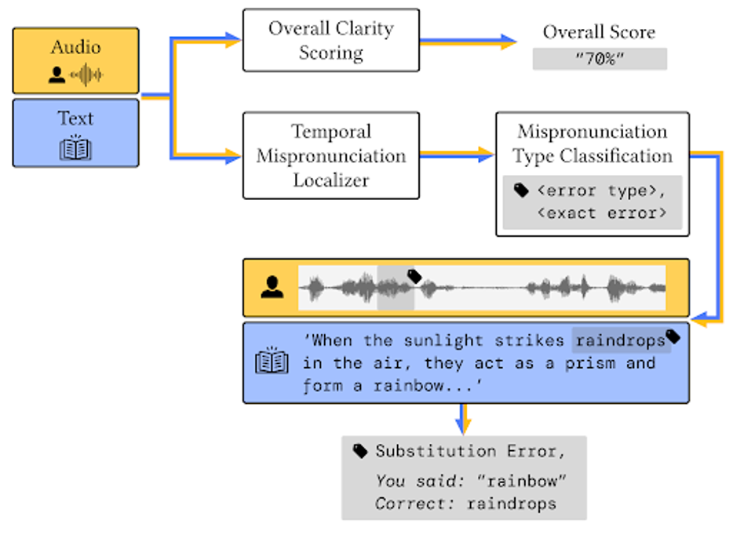
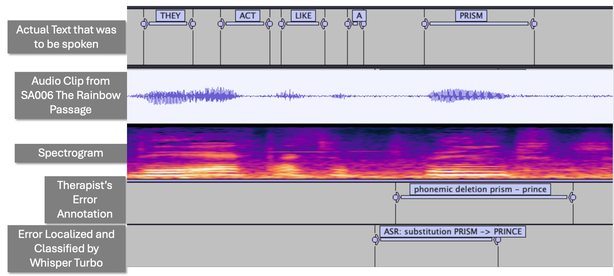
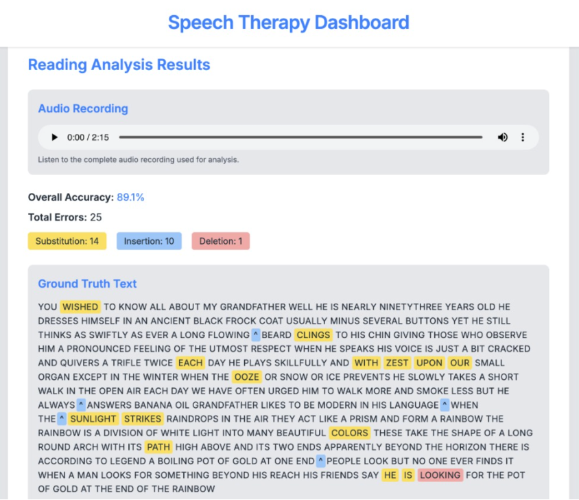

Explainable Dysarthric Speech Clarity
Temporally explainable speech clarity scoring to support clinical assessment workflows for motor speech disorders.
“Can AI provide explainable speech assessment feedback to support dysarthric speech therapy in the context of Singapore?”

Problem
Dysarthria is a motor speech disorder caused by neurological damage — from conditions such as stroke, cerebral palsy, Parkinson's disease, or ALS — that impairs the muscles controlling speech. Individuals with dysarthria often produce speech that is difficult to understand, affecting their ability to communicate and participate in daily life.
Clinical assessment of dysarthric speech clarity is time-consuming, requires trained speech-language pathologists, and typically yields a single holistic score with little insight into which parts of an utterance are unclear. This lack of temporal granularity limits the clinician's ability to design targeted rehabilitation exercises and to track fine-grained progress over time.
Our Approach
We developed a temporally explainable speech clarity scoring system that not only predicts an overall clarity score for each utterance but also highlights when within the utterance the intelligibility degrades. The approach combines acoustic modelling with temporal attention mechanisms, enabling the model to localise low-clarity segments and produce interpretable, time-aligned saliency maps.
These explanations are designed to be clinically meaningful: a therapist can see, for example, that a patient's vowels in the middle of an utterance are consistently unclear, guiding targeted articulatory exercises. The system is validated against expert clinician ratings and shows strong alignment between the predicted low-clarity segments and regions annotated by human raters.
This work is funded by the MOE Tier-1 / NUHS Seed Grant on explainable dysarthric speech assessment (2024).

Temporal error localisation — therapist annotations aligned with ASR-detected mispronunciations

Speech Therapy Dashboard: overall accuracy, error breakdown, and word-level feedback
Related Publications
-
Interspeech 2025